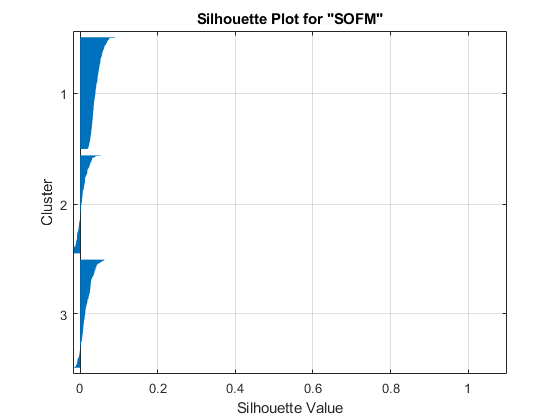
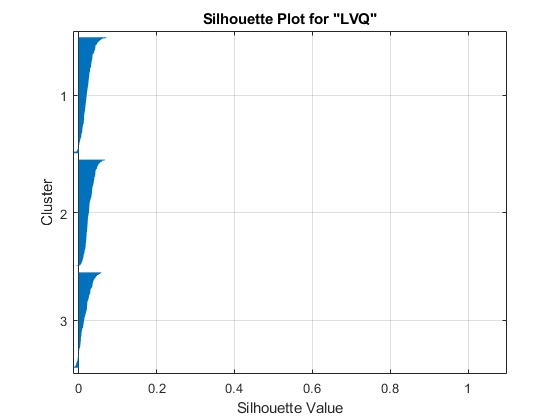

Contents
- Assessing clustering methods' performance and efficacy
- Part 1- Creating a fake dataset
- Part 2- Performing linear dimensionality reduction (or noise suppression) alg.
- Part 3- Investigating different clustering methods (1-SOFM & 2-LVQ)
- Part 3-1-1- Training SOFM
- Part 3-1-2- Evaluating SOFM
- Part 3-2-1- Training Competitive Layer
- Part 3-2-2- Evaluating Competitive Layer
clear; close all; clc
Assessing clustering methods' performance and efficacy
Cluster analysis organizes data into groups based on similarities between the data points. Sometimes the data contains natural divisions that indicate the appropriate number of clusters. Other times, the data does not contain natural divisions, or the natural divisions are unknown. In such a case, you might to determine the optimal number of clusters to group your data. (from MATLAB)
Part 1- Creating a fake dataset
nRow_fake_dataset = 3000; % it should actually be 30000, but for elapsed % running time of the code, 3000 is chosen. nCol_fake_dataset = 600; % it should actually be 6000, but for elapsed % running time of the code, 600 is chosen. temp0 = randn(ceil(nRow_fake_dataset/5), ceil(nCol_fake_dataset/5)); temp1 = repmat(temp0, 5, 5); fake_dataset = temp1(1:nRow_fake_dataset, 1:nCol_fake_dataset);
Part 2- Performing linear dimensionality reduction (or noise suppression) alg.
[coeff, score, ~, ~, explained, ~] = pca(fake_dataset); explained_variance_threshold = 99.5; % for the FFT dataset, a threshold of % 99 or 99.5 is thought to be more suitable. cumulative_explained = cumsum(explained); numFeatures = find(cumulative_explained >= explained_variance_threshold); numFeatures = numFeatures(1); reduced_dataset_by_pca = score(:, 1:numFeatures); inputs = reduced_dataset_by_pca.';
Warning: Columns of X are linearly dependent to within machine precision. Using only the first 120 components to compute TSQUARED.
Part 3- Investigating different clustering methods (1-SOFM & 2-LVQ)
numClusters = 3;
Part 3-1-1- Training SOFM
row_nodes = 3; column_nodes = 1; % Note: the result of the product "row_nodes * column_nodes", should be % equal to "numClusters". dimensions = [row_nodes, column_nodes]; SOFM_net = selforgmap(dimensions); SOFM_net = train(SOFM_net, inputs); SOFM_oneHotClasses = SOFM_net(inputs); SOFM_classes = vec2ind(SOFM_oneHotClasses).';
Part 3-1-2- Evaluating SOFM
SOFM_CalinskiHarabasz_index = evalclusters(inputs.', SOFM_classes, ... 'CalinskiHarabasz') SOFM_DaviesBouldin_index = evalclusters(inputs.', SOFM_classes, ... 'DaviesBouldin') SOFM_silhouette_index = evalclusters(inputs.', SOFM_classes, ... 'silhouette') % Creating a silhouette plot from the clustered data. figure; silhouette(inputs.', SOFM_classes); title(['Silhouette Plot for ', '"SOFM"']) grid on
SOFM_CalinskiHarabasz_index =
CalinskiHarabaszEvaluation with properties:
NumObservations: 3000
InspectedK: 3
CriterionValues: 32.5652
OptimalK: 3
SOFM_DaviesBouldin_index =
DaviesBouldinEvaluation with properties:
NumObservations: 3000
InspectedK: 3
CriterionValues: 7.9987
OptimalK: 3
SOFM_silhouette_index =
SilhouetteEvaluation with properties:
NumObservations: 3000
InspectedK: 3
CriterionValues: 0.0216
OptimalK: 3
 Part 3-2-1- Training Competitive Layer
numEpochs = 100; LVQ_net = competlayer(numClusters); configure(LVQ_net, inputs); LVQ_net.trainParam.epochs = numEpochs; LVQ_net = train(LVQ_net, inputs); LVQ_oneHotClasses = LVQ_net(inputs); LVQ_classes = vec2ind(LVQ_oneHotClasses).';
Part 3-2-2- Evaluating Competitive Layer
LVQ_CalinskiHarabasz_index = evalclusters(inputs.', LVQ_classes, ... 'CalinskiHarabasz') LVQ_DaviesBouldin_index = evalclusters(inputs.', LVQ_classes, ... 'DaviesBouldin') LVQ_silhouette_index = evalclusters(inputs.', LVQ_classes, ... 'silhouette') % Create a silhouette plot from the clustered data. silhouette(inputs.', LVQ_classes); title(['Silhouette Plot for ', '"LVQ"']) grid on
LVQ_CalinskiHarabasz_index =
CalinskiHarabaszEvaluation with properties:
NumObservations: 3000
InspectedK: 3
CriterionValues: 31.3788
OptimalK: 3
LVQ_DaviesBouldin_index =
DaviesBouldinEvaluation with properties:
NumObservations: 3000
InspectedK: 3
CriterionValues: 8.0881
OptimalK: 3
LVQ_silhouette_index =
SilhouetteEvaluation with properties:
NumObservations: 3000
InspectedK: 3
CriterionValues: 0.0222
OptimalK: 3
